Créer un test, de la première question à l’enregistrement
Cette aide explique les fonctions du Test Builder étape par étape, pour une personne qui découvre KALONÉO. Les illustrations sont de véritables captures de KALONÉO. Elles sont disponibles hors connexion ; les boutons à l'écran restent la référence si une version évolue.
Sans InternetRecherche immédiateExplications illustréesAucune modification des tests
01 Premiers pas : comprendre l’écran
Le Builder sert à concevoir les tests. Il ne s’agit pas de l’écran utilisé par les candidats. La partie gauche contient les réglages et les blocs ; la partie droite affiche l’aperçu du candidat.
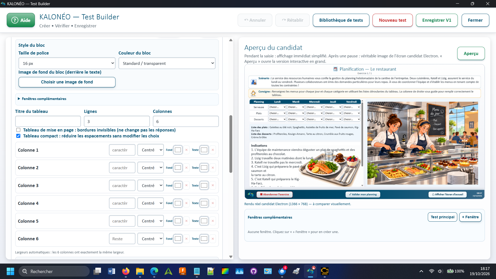
Capture B01 — écran réel du programme. Cliquez sur l'image pour l'agrandir.
Choisissez Nouveau test pour partir d’un modèle vide, ou Bibliothèque de tests pour ouvrir un test existant.
Renseignez le titre, la catégorie et les informations nécessaires.
Ajoutez les blocs puis vérifiez le résultat à droite.
Utilisez Enregistrer lorsque le test est prêt.
Le Builder ne place pas votre curseur automatiquement dans un champ. Cliquez là où vous souhaitez écrire.
02 Créer un nouveau test
Cliquez sur le bouton rouge Nouveau test dans la barre du haut.
Si un travail non enregistré existe, lisez l’avertissement et choisissez de continuer ou non.
Un test générique apparaît avec un premier bloc de texte.
Complétez les champs avant d’enregistrer.
Attention : « Nouveau test » repart d’un test vierge. Ce n’est pas le bouton permettant d’ajouter une question à un test existant ; utilisez plutôt « Ajouter un bloc ».
03 Remplir la définition du test
Titre du test : un nom compréhensible, par exemple « Calculs de commandes ». ID du test : identifiant technique stable, distinct du titre ; le bouton Créer l’ID le prépare à partir du titre.
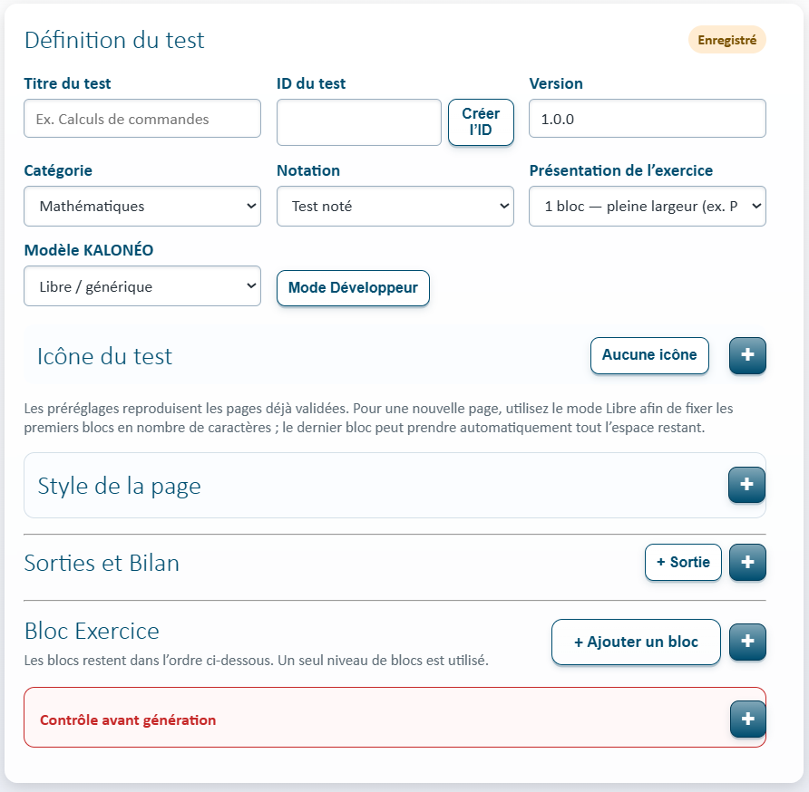
Capture B03 — Définition du test : titre, ID, notation et paramètres généraux. Cliquez sur l'image pour l'agrandir.
Version : indique la version du test. Catégorie : classe le test dans la bonne famille (mathématiques, français, organisation…). Notation : choisissez « Test noté » si les réponses doivent produire un score ; sinon « Test non noté ».
Les catégories Introduction de parcours et Fin de parcours servent à créer des pages de présentation réutilisables dans l’éditeur de parcours. Elles ne sont ni notées ni reliées au bilan institutionnel. Les exercices ordinaires conservent leurs catégories et leurs barèmes.
Pour une activité pratique, la catégorie peut entraîner un test non noté. Le score n’est jamais à inventer : il dépend des réponses et des règles enregistrées.
04 Choisir la présentation de l’exercice
Dans Présentation de l’exercice, sélectionnez une page pleine largeur ou une disposition en deux colonnes : 50/50, 40/60 ou 60/40. Le mode Libre permet de définir des largeurs en caractères.
Une fois une présentation à deux colonnes choisie, chaque bloc possède un choix de zone : Zone gauche, Zone droite ou Pleine largeur. Les blocs restent dans l’ordre vertical de la liste.
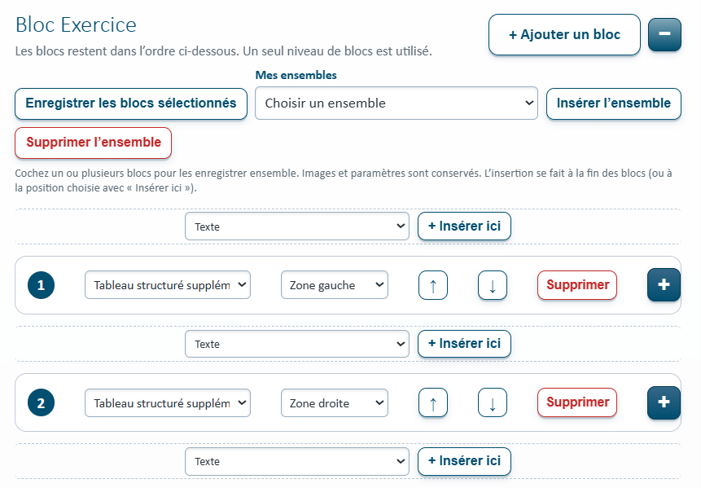
Capture B08 — écran réel du programme. Cliquez sur l'image pour l'agrandir.
La présentation est un réglage général. La zone est choisie séparément pour chaque bloc. Les anciens tests à deux colonnes conservent leur disposition.
05 Utiliser un modèle prêt à l’emploi
La liste Modèle KALONÉO propose des structures de départ : questions et image, texte à trous, deux tableaux, grille pleine largeur, Gratte-ciel, etc.
Choisissez le modèle qui ressemble le plus à votre exercice.
Confirmez le remplacement des blocs si un message apparaît.
Adaptez chaque bloc avec vos consignes et vos réponses.
Appliquer un modèle peut remplacer les blocs déjà présents. Vérifiez avant de confirmer, surtout si vous avez commencé votre exercice.
06 Ajouter un bloc et choisir son type
Cliquez sur + Ajouter un bloc. Dans l’en-tête du bloc, ouvrez la liste des types : Texte, HTML, HTML + JavaScript, Image, Sélection d’images, Audio, Vidéo, Éditeur de texte KALONÉO, Question, Tableau de réponses, Tableau/grille, Texte à trous ou Tableau structuré supplémentaire.
Cliquez sur + pour déplier le bloc, saisir son contenu et régler ses options. Cliquez sur − pour le replier sans effacer son contenu.
Capture B08 — écran réel du programme. Cliquez sur l'image pour l'agrandir.
07 Réorganiser ou supprimer des blocs
Les petites flèches ↑ et ↓ déplacent un seul bloc. ↑ Ligne et ↓ Ligne déplacent une rangée entière, par exemple un bloc gauche accompagné d’un bloc droit.
Le bouton Supprimer retire le bloc concerné. Les blocs peuvent être repliés individuellement pour voir plus facilement l’ensemble du test.
Si vous supprimez un bloc par erreur, utilisez immédiatement « Annuler », tant que l’action figure dans l’historique.
08 Insérer ou dupliquer sans tout refaire
Entre deux blocs, choisissez un type puis cliquez sur + Insérer ici : le nouveau bloc arrive directement à cet endroit. Pour reproduire un bloc existant, dépliez-le et cliquez sur Dupliquer.
La duplication conserve le contenu, les images et la mise en forme. Les identifiants de questions copiées sont renouvelés automatiquement pour éviter de mélanger les réponses.
Après insertion, vérifiez la Zone gauche / Zone droite / Pleine largeur et l’ordre des blocs dans l’aperçu.
09 Réutiliser plusieurs blocs avec « Mes ensembles »
Dans les blocs à conserver, cochez Inclure dans l’ensemble.
Cliquez sur Enregistrer les blocs sélectionnés puis donnez un nom parlant, par exemple « En-tête et deux questions ».
Dans un futur test, choisissez cet ensemble dans Mes ensembles.
Cliquez sur Insérer l’ensemble, ou utilisez « + Insérer ici » à l’emplacement souhaité.
Les blocs réutilisés reçoivent de nouveaux identifiants de réponses. Le contenu et les images sont conservés.
Capture B08 — Ensembles réutilisables, ordre des blocs et commandes d'insertion. Cliquez sur l'image pour l'agrandir.
Les ensembles sont conservés localement sur ce PC, dans les données du Builder. Ils ne sont pas automatiquement synchronisés entre ordinateurs ni inclus dans l’export d’un autre test.
10 Écrire une question et ses bonnes réponses
Ajoutez un bloc de type Question.
Renseignez l’énoncé. Pour mettre un passage de la question en gras, italique, souligné ou en couleur, sélectionnez le passage puis cliquez sur G, I, U ou A🎨 sous le champ « Question ». L’aperçu et l’écran candidat affichent la mise en forme.
Choisissez le type de réponse attendu : nombre, texte, choix, durée ou autre type proposé.
Indiquez clairement toutes les réponses acceptées quand le champ le permet ; plusieurs variantes peuvent être séparées par un point-virgule.
Fixez les points en accord avec le barème de l’exercice.
Testez le résultat via Vérifier les réponses et le barème, puis avec l’aperçu Electron.
Pour demander une justification, choisissez Type de réponse → Texte libre — évaluation Administrateur. Le candidat peut écrire plusieurs lignes : sa réponse est conservée et évaluée manuellement, sans point automatique. La barre G / I / U / A🎨 met en forme la question du concepteur, pas la rédaction du candidat.
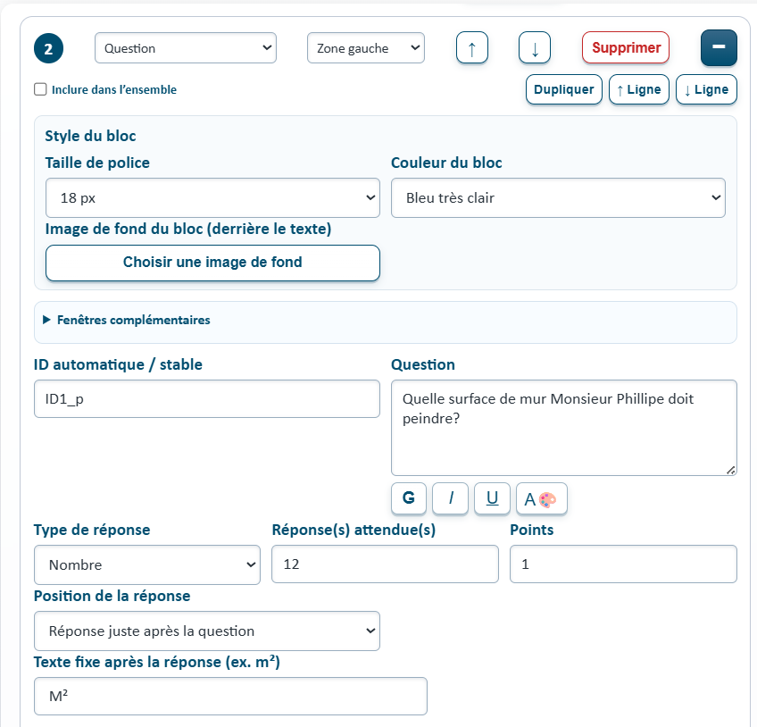
Capture B05 — Question, réponse attendue, points et unité affichée après la réponse. Cliquez sur l'image pour l'agrandir.
Texte fixe après la réponse : saisissez par exemple m², €, % ou cm dans ce champ facultatif du bloc Question. Ce texte apparaît juste après la case du candidat (ou à droite de sa zone de rédaction). Le candidat ne le saisit pas : il n'est ni enregistré comme sa réponse ni noté. Vous pouvez laisser ce champ vide.
Hauteur de la réponse (lignes) : pour une question de type Texte libre — évaluation Administrateur, choisissez de 1 à 20 lignes visibles, par exemple 2 ou 3 pour une justification courte. Le texte plus long défile dans la zone de réponse sans être supprimé. Laissez la hauteur sur Auto pour conserver la taille historique.
Le champ Texte fixe après la réponse est maintenant plus étroit dans le Builder. En dessous, choisissez la largeur et, pour les réponses libres, la hauteur. Ces dimensions sont enregistrées dans le KALTEST et ne changent pas la notation.
Ne confondez pas « Texte fixe après la réponse » avec « Champ unité affiché » et « Unité notée » : ces deux dernières options demandent au candidat de saisir une unité et peuvent faire intervenir sa correction. Pour une unité déjà imprimée après la réponse, utilisez seulement le texte fixe.
11 Faire accepter plusieurs unités
Dans une question ou une cellule de réponse prenant en charge l’unité, définissez les unités acceptées : par exemple kg ; kilo ; kilogramme. Utilisez l’option Unité notée uniquement si l’unité doit compter dans le score.
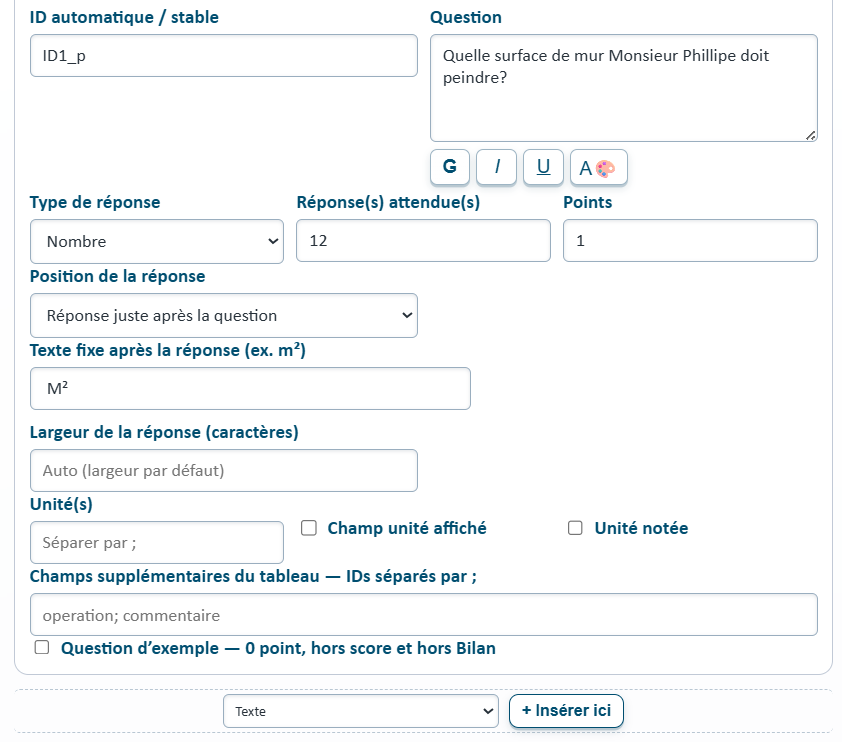
Capture B07 — Afficher une unité, accepter plusieurs variantes et activer sa notation. Cliquez sur l'image pour l'agrandir.
Quand Unité notée est activé, une unité correcte peut ajouter 1 point au barème de la question. Si elle est désactivée, le champ peut servir à comprendre la réponse sans ajouter de point.
Vérifiez la liste des variantes et les points en utilisant le bouton de vérification du barème. Une unité non acceptée ne doit pas être considérée correcte.
12 Construire un tableau ou une grille
Choisissez le type Tableau / grille cellule par cellule. Définissez les lignes et les colonnes, puis cliquez sur chaque cellule pour sélectionner son rôle : texte fixe, réponse du candidat, liste de choix, image, unité… Les paramètres disponibles dépendent du rôle de la cellule.
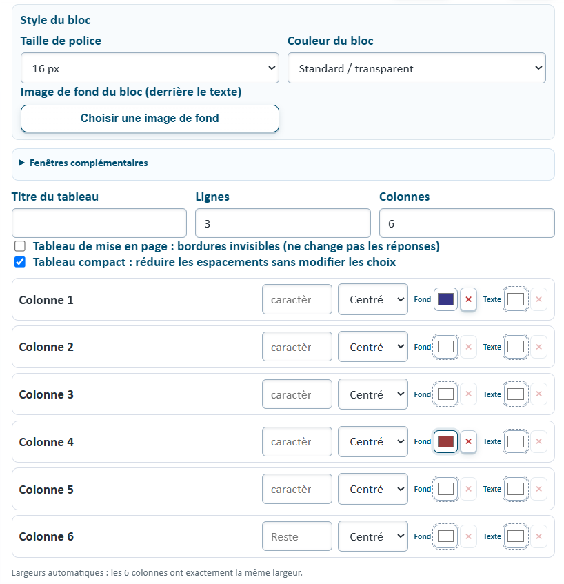
Capture B06 — écran réel du programme. Cliquez sur l'image pour l'agrandir.
Vous pouvez ajuster la largeur des colonnes, l’alignement, les couleurs de fond et de texte, les en-têtes et, pour les structures qui le permettent, la fusion de cellules.
Après un changement de type de cellule, vérifiez toujours la réponse attendue et le nombre de points, surtout pour les cellules de sélection et d’unité.
13 Ajouter et dimensionner une image
Depuis la barre supérieure du Builder, le bouton Bibliothèque d’images ouvre directement la galerie commune. Elle présente les illustrations fournies avec KALONÉO (dont les nouveaux thèmes de fin de parcours, activités professionnelles, objets et décors, bandeaux et horaires), les icônes et les images personnelles. Les vignettes sont chargées à la demande.
Ajoutez un bloc Image ou choisissez une image pour le fond de page.
Ouvrez la bibliothèque d’images et recherchez par nom, thème ou orientation.
Choisissez une illustration déjà présente ou cliquez sur Importer une image du PC.
Réglez sa taille et son affichage dans les options proposées pour le bloc.
Contrôlez l’image complète dans l’aperçu.
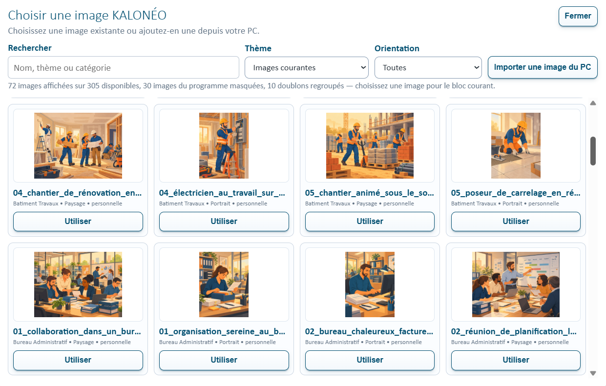
Capture B10 — écran réel du programme. Cliquez sur l'image pour l'agrandir.
Pour transférer un test sur un autre PC, utilisez l’export/import KALTEST prévu avec les ressources du test. Une simple copie d’un chemin de fichier Windows n’est pas suffisante.
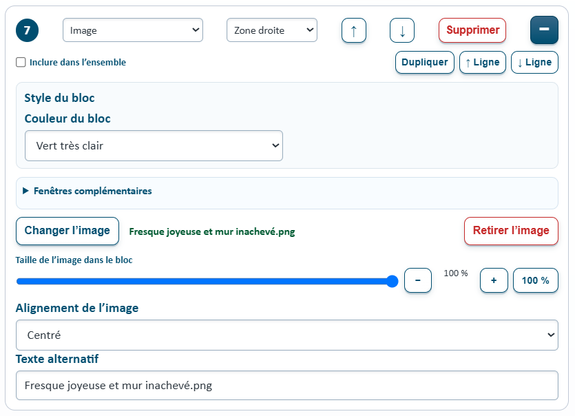
Capture B09 — Image d'un bloc : changement, retrait, taille et alignement. Cliquez sur l'image pour l'agrandir.
14 Créer une sélection d’images, classique ou en nuage
Le type Sélection d’images permet au candidat de cliquer sur plusieurs objets pour répondre. Indiquez la question, le nombre d’éléments, le nombre à sélectionner et le barème.
Choisissez une présentation normale ou en nuage : les objets sont disposés dans l’espace de manière non alignée. L’aperçu et le candidat utilisent le même moteur d’affichage partagé.
Exemple : « Sélectionne 25 % des 8 objets ». La réponse attendue est de 2 objets. Vérifiez le nombre configuré avant d’enregistrer.
15 Donner une icône à un test
Dans Icône du test, cliquez sur le bouton + pour ouvrir la bibliothèque. Recherchez une icône adaptée au thème puis sélectionnez-la. L’icône choisie est enregistrée avec le test.
Le bouton Aucune icône retire uniquement l’icône choisie pour le test ; il ne supprime aucune image de la bibliothèque.
16 Utiliser du texte, de l’audio, de la vidéo et l’éditeur
Texte : pour expliquer une consigne ou présenter une activité. Audio / Vidéo : pour les supports multimédias du test. Éditeur de texte KALONÉO : pour une activité de rédaction avec l’éditeur commun.
Les blocs HTML et HTML + JavaScript sont destinés à des contenus techniques spécifiques. Privilégiez les blocs standards quand ils répondent au besoin : ils facilitent l’import/export, la correction et la maintenance.
17 Mettre en forme scénario, consignes et blocs
Dépliez Style de la page pour afficher les champs Scénario et Consignes et les options de fond.
Sélectionnez le texte à mettre en forme.
Utilisez les boutons G (gras), I (italique), U (souligné) ou A🎨 (couleur).
Choisissez un fond de page clair ou une image d’arrière-plan lorsque cela améliore la lisibilité.
La sélection du texte et le champ que vous éditiez doivent être conservés après un choix de couleur. Le Builder ne doit pas placer le curseur ailleurs spontanément.
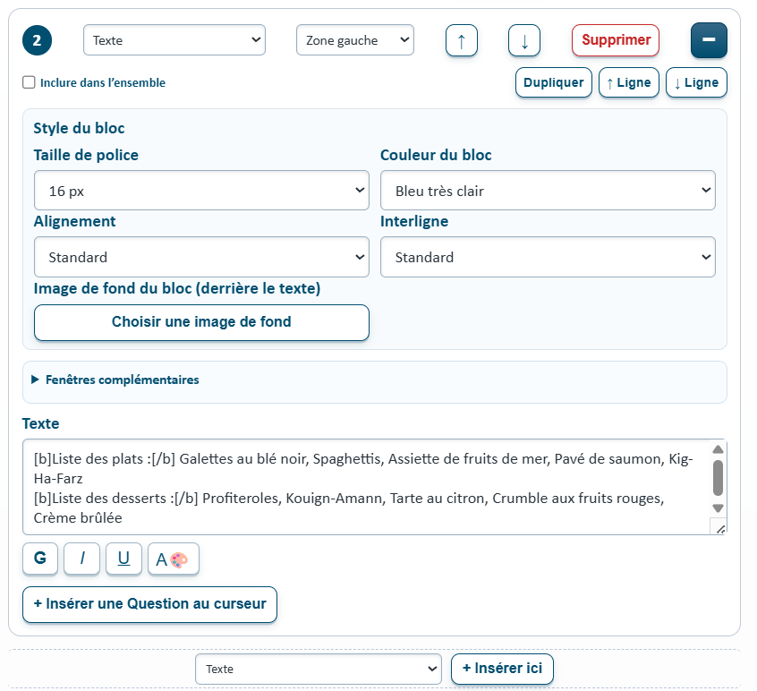
Capture B04 — Consignes et commandes de mise en forme du texte. Cliquez sur l'image pour l'agrandir.
18 Activer calculatrice, compteur et aide administrateur
Les cases de la section Style de la page permettent d’activer les capacités du test : calculatrice, compteur KALONÉO, intervention administrateur, autoévaluation et matériel extérieur.
Pour le compteur, choisissez la mesure simple ou répétée, le nombre de mesures et les options de remise à zéro ou d’affichage du temps. L’option Focus après arrêt concerne uniquement le comportement du compteur dans le test candidat, pas le curseur dans le Builder.
Renseignez les instructions de l’administrateur et le matériel nécessaire lorsque ces options sont activées.
19 Comprendre « Sorties et Bilan »
Une sortie est une donnée produite par le test, par exemple un score, une réponse ou un résultat utile. Une liaison Bilan indique où une sortie doit apparaître dans le bilan administratif.
Dépliez Sorties et Bilan.
Cliquez sur + Sortie et définissez l’identifiant, le type et les réglages de la donnée.
Utilisez + Liaison Bilan pour raccorder cette donnée à une ligne du catalogue de bilan.
Vérifiez le résultat affiché dans l’espace administrateur après un parcours d’essai.
Les identifiants doivent rester cohérents. Une sortie mal reliée peut produire une rubrique vide ou un résultat au mauvais endroit.
20 Vérifier les réponses et le barème
Dépliez Contrôle avant génération.
Cliquez sur Vérifier les réponses et le barème.
Lisez les vérifications de bonnes et mauvaises réponses, des points et des unités.
Corrigez les questions signalées, puis recommencez.
Capture B07 — écran réel du programme. Cliquez sur l'image pour l'agrandir.
Le contrôle automatique couvre les questions standards. Un exercice doté d’un moteur de correction spécialisé doit aussi être contrôlé dans Electron ; un rapport vert ne remplace pas cet essai.
21 Comprendre l’aperçu du candidat
La colonne droite affiche un aperçu simplifié immédiat pendant la saisie. Après une pause, elle reçoit une image de la véritable page candidat Electron.
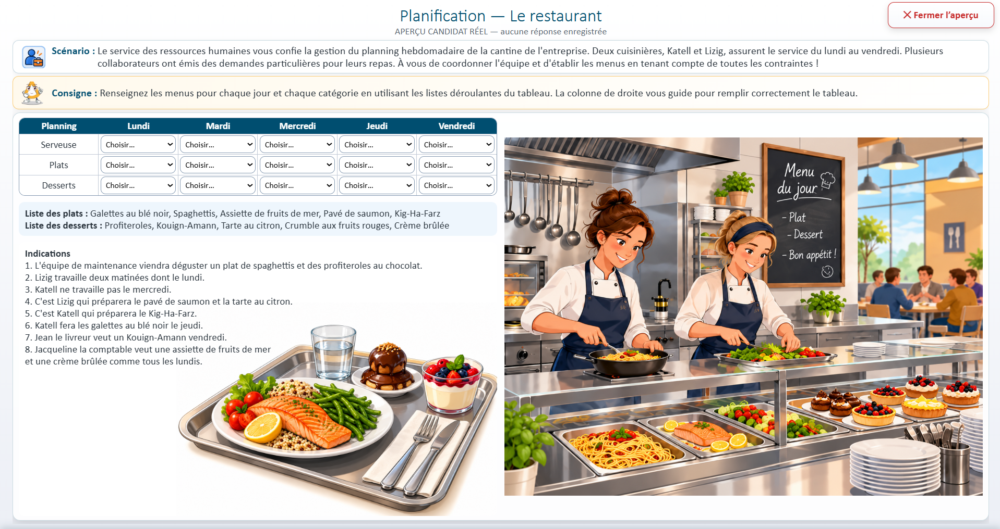
Capture B11 — Aperçu candidat réel dans Electron. Cliquez sur l'image pour l'agrandir.
Cliquez sur le bouton Aperçu pour ouvrir la version interactive en grand. Vérifiez les colonnes, les tableaux, les réponses et les images, puis utilisez la commande de fermeture de l’aperçu pour revenir au Builder.
L’aperçu sert à vérifier l’apparence et les interactions sans lancer une véritable évaluation candidat. Vos modifications restent dans le Builder.
22 Enregistrer un test et corriger les erreurs
Vérifiez le titre, l’ID, les questions, les bonnes réponses et les autres champs obligatoires.
Cliquez sur Enregistrer dans la barre supérieure.
Si une anomalie subsiste, le Builder refuse l’enregistrement et affiche un message. Dépliez Contrôle avant génération pour lire les erreurs.
Corrigez les éléments indiqués puis relancez l’enregistrement.
Le statut de brouillon vous aide à distinguer un travail en cours d’un test enregistré. Les brouillons locaux ne doivent pas être confondus avec un test enregistré dans la bibliothèque.
Il n’est pas nécessaire de placer automatiquement le curseur dans un champ manquant : le message explique ce qu’il faut corriger, et vous choisissez où intervenir.
23 Retrouver, modifier, importer ou exporter un test
Le bouton Bibliothèque de tests permet de rechercher et d’ouvrir un test existant. Le Builder travaille avec des définitions au format KALTEST / JSON ; les commandes d’import et d’export disponibles dans KALONÉO permettent de transférer les tests avec leurs ressources prises en charge.
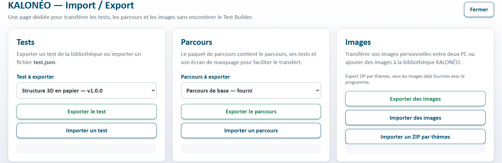
Capture B12 — Page Import / Export des tests, parcours et images. Cliquez sur l'image pour l'agrandir.
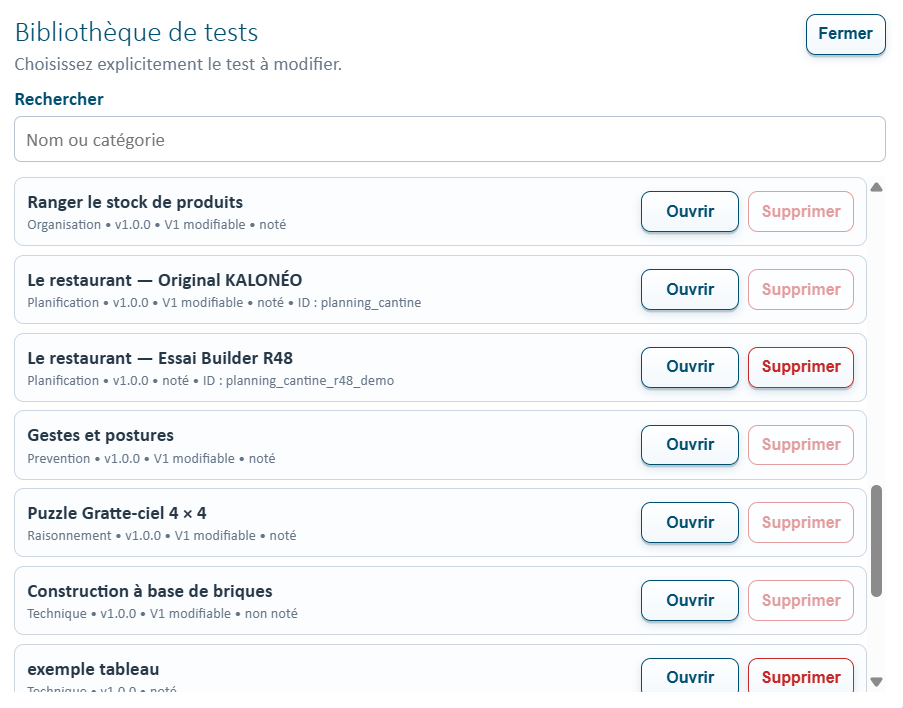
Capture B02 — Bibliothèque avec recherche, ouverture et catégories. Cliquez sur l'image pour l'agrandir.
Pour modifier un test déjà existant, ouvrez-le explicitement depuis la bibliothèque et vérifiez son titre et sa version avant d’enregistrer. Pour un transfert entre PC, utilisez la fonction d’export/import du programme plutôt qu’un simple copier-coller des images.
24 Annuler et rétablir vos changements
↶ Annuler revient sur une modification du test. ↷ Rétablir réapplique la modification annulée. Les boutons peuvent être grisés lorsque l’historique ne contient aucune action possible.
Dans un champ de texte actif, Ctrl + Z conserve son comportement normal pour annuler la saisie, sans déclencher une annulation globale du test. En dehors d’un champ de texte, les raccourcis globaux du Builder peuvent gérer l’historique.
25 Mode Développeur et versions officielles V1
Le Mode Développeur est un accès protégé réservé aux opérations particulières sur les versions officielles. Il n’est pas nécessaire pour créer un test ordinaire.
Les versions originales V1 sont sensibles : un export officiel vers TESTS_V1 exige le mode prévu à cet effet. Ne remplacez pas une V1 validée par inadvertance ; conservez des copies de sécurité et respectez les règles de version du projet.
26 Résoudre les problèmes fréquents
Je ne peux pas enregistrer.
Ouvrez « Contrôle avant génération », lisez les erreurs, remplissez les éléments obligatoires et réessayez.
Je ne vois pas mes options.
Vérifiez si la section est repliée : le bouton « + » déplie le contenu. Il peut être nécessaire de descendre dans le panneau de gauche.
Mon image n’apparaît pas dans un test exporté.
Vérifiez qu’elle est réellement présente dans la bibliothèque ou embarquée, puis utilisez les commandes de transfert KALTEST prévues.
L’aperçu semble différent pendant la saisie.
L’affichage immédiat est simplifié. Attendez la capture fidèle ou cliquez sur « Aperçu » pour la version interactive.
Le curseur ne reste pas dans mon champ.
Notez le champ, l’action qui déclenche la perte et si un aperçu était en cours. Le Builder n’est pas censé déplacer automatiquement le curseur : signalez le comportement.
Je veux quitter le Builder.
Cliquez sur Fermer. Si le test a été modifié, tenez compte de la confirmation concernant les modifications non enregistrées.
À retenir : créez vos blocs, choisissez leur disposition, vérifiez les réponses, contrôlez l’aperçu puis enregistrez. Cette aide doit être mise à jour à chaque nouvelle fonction du Builder.
Aucune rubrique trouvée
Essayez un mot plus court (par exemple « image », « tableau » ou « bilan »).
Fenêtres complémentaires — consulter un document sans quitter le test
Créez une fenêtre dans la colonne droite, sous la miniature du candidat, avec + Fenêtre.
Choisissez un titre et son contenu : texte long, liste (une ligne par élément), tableau (une ligne par rangée et
des colonnes séparées par un point-virgule) ou image/plan issue de la bibliothèque KALONÉO.
Les très petites miniatures du bas permettent de retrouver les fenêtres existantes.
Pendant leur modification, l'aperçu principal Electron est masqué et ses nouvelles captures sont suspendues.
Le bouton Test principal relance une seule actualisation si nécessaire.
Dans le Bloc Exercice voulu, déployez les réglages « Fenêtres complémentaires » puis
utilisez Ajouter un bouton documentaire. Renseignez son texte, sélectionnez la fenêtre
à ouvrir et placez le bouton avant ou après le contenu du bloc. Le bouton est compact pour rester sur une ligne courte. Dans un bloc Texte,
« Après le contenu » conserve le bouton sur la même ligne lorsque la place le permet. Pour
l'insérer entre deux mots ou juste après « Question : », placez d'abord le curseur dans le texte
puis sélectionnez Dans le texte (au curseur). Vous pouvez choisir plusieurs boutons
pour un même test, ou rattacher une fenêtre à plusieurs blocs.
Sur la miniature Electron à droite, le survol d'un bloc affiche son numéro,
son type et un fin contour bleu : ces repères ne ralentissent pas la capture et n'existent
pas dans le véritable aperçu plein écran ni dans le parcours candidat.
En mode candidat, un clic ouvre un dialogue superposé dans la même application Electron,
limité à 80 % de l'écran. Précédent et Suivant parcourent les documents du test ; Fermer rend
exactement la page d'exercice précédente sans effacer la saisie.
Les documents et leurs images sont intégrés au fichier KALTEST lors de l'enregistrement
et accompagnent le test lors de l'import/export hors ligne. Le Contrôle avant génération
vérifie notamment qu'aucun document ne soit vide et que chaque bouton renvoie vers un document existant.
Pour réduire temporairement la liste des blocs, utilisez le bouton bleu + / − à droite
de « Bloc Exercice ». Le repli ne supprime rien.